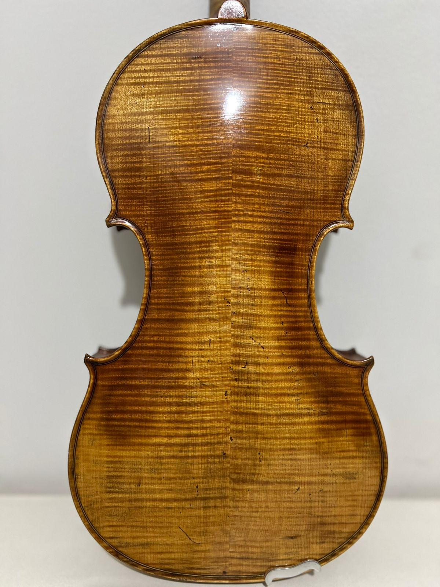
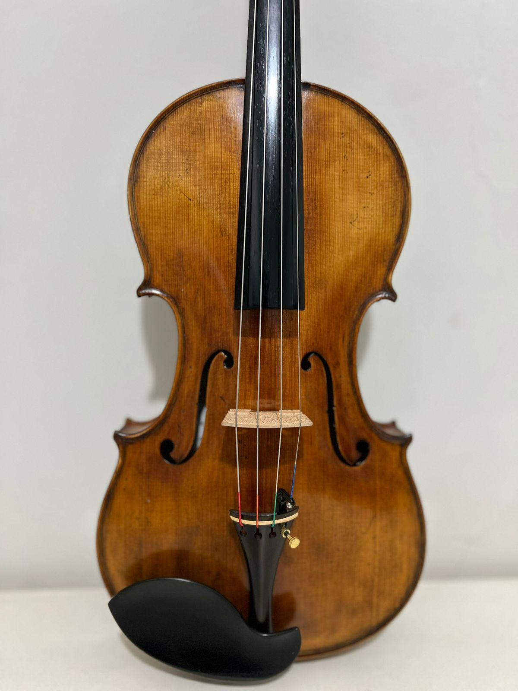

Este instrumento de cordas representa não apenas uma ferramenta para
a produção musical, mas também uma peça marcada pela tradição,
pelo trabalho artesanal e pela riqueza estética.
Suas curvas cuidadosamente esculpidas, a textura da madeira e os
detalhes de sua construção revelam a relação entre arte, técnica
e música que acompanha a história dos instrumentos de cordas.

Na parte traseira, é possível observar com maior evidência
os veios da madeira e seu acabamento artesanal. As características
visuais da peça evidenciam o cuidado empregado na construção,
transformando o instrumento em uma verdadeira expressão de
arte e marcenaria musical.

Na vista frontal, destacam-se as formas clássicas do instrumento,
com suas curvas simétricas, as aberturas em formato de "f"
e o acabamento em madeira natural. O desenho do corpo foi
cuidadosamente desenvolvido para unir estética e funcionalidade,
contribuindo para a projeção e a qualidade sonora.